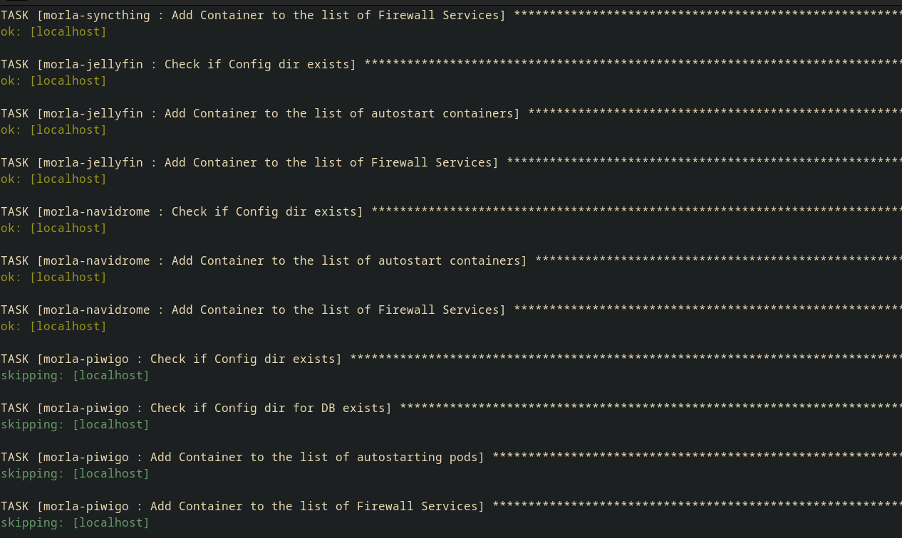

Juggling with UIDs and GIDs
rootless container deployment with Ansible
Nicola Sella
Motivation
- Experimenting with rootles containers in my home-server
- Automating using Ansible. It's not an overkill
- Breaking your stuff is a
terriblegreat way to learn
Meet my home-server
morla@morla
morla@morla
morla@morla
- It remembers everything
- It is heavy and dusty
- It is a turtle
My first setup
- Portainer
- Docker compose files imported from linuxserver
| Requirements | Portainer |
|---|---|
| Easy installation | Portainer is easy to install on some systems |
| Rootless | Only supports Docker (at least some time ago) |
| Not GUI dependent | Heavily dependent on GUI |
Linuxserver.io images often have a setup that looks like this
---
services:
piwigo:
image: lscr.io/linuxserver/piwigo:latest
container_name: piwigo
environment:
- PUID=1000
- PGID=1000
- TZ=Etc/UTC
volumes:
- /path/to/piwigo/config:/config
- /path/to/appdata/gallery:/gallery
ports:
- 80:80
restart: unless-stopped
Why is that?
Podman mounts volumes unpleasantly with the root workaround
[morla@morla ~]$ ls -ld ~/Config/Piwigo
drwxr-xr-x. 7 100998 100998 83 Feb 9 2023 ~/Piwigo
[morla@morla ~]$ ls -ld ~/Config/Piwigo
drwxr-xr-x. 7 morla morla 83 Feb 9 2023 ~/Piwigo
Podman unshare
[morla@morla ~]$ touch ~/Config/Piwigo/test
touch: cannot touch '/home/morla/Config/Piwigo/test': Permission denied
[morla@morla ~]$ podman unshare
[root@morla ~]# touch ~/Config/Piwigo/test
[root@morla ~]# ^D
exit
[morla@morla ~]$ ls -l ~/Config/Piwigo
total 0
drwxr-xr-x. 2 100998 100998 38 Feb 9 2023 keys
drwxr-xr-x. 4 100998 100998 54 Jun 5 2023 log
drwxrwxr-x. 3 100998 100998 176 May 28 2023 nginx
drwxr-xr-x. 2 100998 100998 44 Feb 9 2023 php
drwxr-xr-x. 8 100998 100998 121 Feb 9 2023 www
-rw-r--r--. 1 morla morla 0 Jan 30 15:27 test
| Root Outside | User Outside | |
|---|---|---|
| Root Inside |
# whoami
root
# podman run -it fedora whoami
root
|
$ whoami
morla
$ podman run -it fedora whoami
root
|
| User Inside |
# whoami
root
# podman run -itu sync fedora whoami
sync
|
$ whoami
morla
$ podman run -itu sync fedora whoami
sync
|
| User Outside | |
|---|---|
| Root Inside |
$ id
uid=1000(morla) ...
$ podman run -id fedora bash
6175d5d...
$ podman top --latest huser user
HUSER USER
1000 root
|
| User Inside |
$ id
uid=1000(morla) ...
$ podman run -idu sync fedora bash
3103607...
$ podman top --latest huser user
HUSER USER
100998 sync
|
This is What you could do
$ podman run \
--uidmap=$uid:0:1 \
--uidmap=0:1:$uid \
--uidmap $(($uid+1)):$(($uid+1)):$(($subuidSize-$uid)) - Map the UID $uid in the container to your normal UID on the host.
- Map the UIDs between 0 and $uid - 1 in the container to the lower part of the subuids (subordinate UIDs) (from $subuidStart to $subuidStart+$uid-1).
- Map the UIDs between $uid+1 and $subuidSize in the container to the remaining subuids.
podman run --uidmap=
podman run --uidmap=
$uid
0
1
podman run --uidmap
0
1
$uid
podman run --uidmap
1
$uid
0
podman run --uidmap
$uid+1
$uid+1
$sSize-$uid
Let's run it
$ podman run \
--uidmap=911:0:1 \
--uidmap=0:1:911 \
--uidmap:912:912:64625 Inside the container you see this
$ podman exec -it morla-piwigo cat /proc/self/uid_map
911 0 1
0 1 911
912 912 64625
And outside you see this
drwxr-xr-x. 7 morla morla 83 Feb 9 2023 Piwigo
drwxr-xr-x. 4 morla morla 52 Feb 9 2023 PiwigoDB
This option should also be supported since podman 4.3.0
--userns keep-id:uid=$uid,gid=$gid
| Requirements | Solution |
|---|---|
| Easy installation | ... |
| Rootless | Podman |
| Not GUI dependent | ... |
Organized setup with Ansible
roles/morla-piwigo/
├── defaults
│ └── main.yml
└── tasks
├── destroy_piwigo.yml
├── init_flag.yml
├── init.yml
├── main.yml
├── pull_piwigo.yml
└── setup_piwigo.yml
Main config file
---
# SPDX-FileCopyrightText: Nicola Sella
#
# SPDX-License-Identifier: GPL-3.0-or-later
# configuration file for piwigo
morla_piwigo_enabled: false
morla_piwigo_flag_public: true
morla_piwigo_flag_autostart: true
morla_piwigo_flag_wireguard: true
morla_piwigo_flag_firewall: true # replace with if port list non empty
# Name
morla_piwigo_long_name: Piwigo
morla_piwigo_short_name: piwigo
morla_piwigo_container_short_name: '{{ morla_piwigo_short_name }}'
morla_piwigo_container_name: '{{ morla_user_username }}-{{ morla_piwigo_container_short_name }}'
morla_piwigo_public_url: '{{ morla_piwigo_short_name }}.{{ morla_public_url }}'
morla_piwigo_pod_name: '{{ morla_piwigo_container_name }}-pod'
morla_piwigo_container_image_base: lscr.io/linuxserver/piwigo
morla_piwigo_container_image_tag: latest
morla_piwigo_container_image: '{{ morla_piwigo_container_image_base }}:{{ morla_piwigo_container_image_tag }}'
# Networking
morla_piwigo_reverse_proxy_port: '5050'
morla_piwigo_exposed_proxy_port: '80'
# Networking/Firewall
morla_piwigo_fw_ports:
tcp:
- '{{ morla_piwigo_reverse_proxy_port }}'
udp:
# Networking/Port Forwarding
morla_piwigo_ports:
- '{{ morla_piwigo_reverse_proxy_port }}:{{ morla_piwigo_exposed_proxy_port }}'
# Storage/Host
morla_piwigo_config_dir: '{{ morla_config_dir }}/{{ morla_piwigo_long_name }}'
# Storage/Mount
morla_piwigo_volumes:
- '{{ morla_piwigo_config_dir }}:/config:Z'
- '{{ morla_media_dir }}/pictures/Piwigo:/gallery:z'
# Labels/Traefik
morla_piwigo_labels:
traefik.enable: '{{ morla_piwigo_flag_public }}'
traefik.http.services.piwigo.loadbalancer.server.port: '{{ morla_piwigo_exposed_proxy_port }}'
traefik.http.routers.piwigo.tls: true
traefik.http.routers.piwigo.rule: Host(`{{ morla_piwigo_public_url }}`)
traefik.http.routers.piwigo.entrypoints: websecure
traefik.http.routers.piwigo.tls.certresolver: myresolver
# DB
# Name
morla_piwigo_db_long_name: PiwigoDB
morla_piwigo_db_short_name: piwigo-db
morla_piwigo_db_container_short_name: '{{ morla_piwigo_db_short_name }}'
morla_piwigo_db_container_name: '{{ morla_user_username }}-{{ morla_piwigo_db_container_short_name }}'
morla_piwigo_db_container_image_base: lscr.io/linuxserver/mariadb
morla_piwigo_db_container_image_tag: 10.6.10
morla_piwigo_db_container_image: '{{ morla_piwigo_db_container_image_base }}:{{ morla_piwigo_db_container_image_tag }}'
# Environment
morla_piwigo_db_env_mysql_user: piwigo
morla_piwigo_db_env_mysql_password: '{{ morla_piwigo_db_password }}'
morla_piwigo_db_env_mysql_database: piwigo-db
morla_piwigo_db_env_mysql_random_root_password: true
# Storage/Host
morla_piwigo_db_config_dir: '{{ morla_config_dir }}/{{ morla_piwigo_db_long_name }}'
# Storage/Mount
morla_piwigo_db_volumes:
- '{{ morla_piwigo_db_config_dir }}:/config:Z'
Setup
roles/morla-piwigo/
├── defaults
│ └── main.yml
└── tasks
├── destroy_piwigo.yml
├── init_flag.yml
├── init.yml
├── main.yml
├── pull_piwigo.yml
└── setup_piwigo.yml
Scripting? What is that?
---
- name: Create config directory
ansible.builtin.file:
path: '{{ morla_piwigo_config_dir }}'
state: directory
owner: '{{ morla_user_username }}'
group: '{{ morla_user_groupname }}'
when: not check_piwigo_config_dir.stat.exists
- name: Create DB config directory
ansible.builtin.file:
path: '{{ morla_piwigo_db_config_dir }}'
state: directory
owner: '{{ morla_user_username }}'
group: '{{ morla_user_groupname }}'
when: not check_piwigo_db_config_dir.stat.exists
- name: Create pod
containers.podman.podman_pod:
name: '{{ morla_piwigo_pod_name }}'
network: morla-wireguard-network
ports: '{{ morla_piwigo_ports }}'
label: '{{ morla_piwigo_labels }}'
uidmap:
- '{{ morla_fake_puid }}:0:1'
- 0:1:{{ morla_fake_puid }}
- '{{ morla_fake_puid + 1 }}:{{ morla_fake_puid + 1 }}:{{ morla_subuid_size - morla_fake_puid }}'
gidmap:
- '{{ morla_fake_pgid }}:0:1'
- 0:1:{{ morla_fake_pgid }}
- '{{ morla_fake_pgid + 1 }}:{{ morla_fake_pgid + 1 }}:{{ morla_subgid_size - morla_fake_pgid }}'
generate_systemd:
path: '{{ morla_home_config_systemd_dir }}'
restart_policy: always
names: true
pod_prefix: '{{ morla_systemd_service_pod_prefix }}'
state: started
- name: Create container
containers.podman.podman_container:
name: '{{ morla_piwigo_container_name }}'
image: '{{ morla_piwigo_container_image}}'
pod: '{{ morla_piwigo_pod_name }}'
volumes: '{{ morla_piwigo_volumes }}'
env:
PUID: '{{ morla_fake_puid }}'
PGID: '{{ morla_fake_pgid }}'
TZ: '{{ morla_tz }}'
state: started
- name: Create Database
containers.podman.podman_container:
name: '{{ morla_piwigo_db_container_name }}'
image: '{{ morla_piwigo_db_container_image }}'
pod: '{{ morla_piwigo_pod_name }}'
network: container:morla-piwigo
volumes: '{{ morla_piwigo_db_volumes }}'
env:
PUID: '{{ morla_fake_puid }}'
PGID: '{{ morla_fake_pgid }}'
TZ: '{{ morla_tz }}'
MYSQL_USER: '{{ morla_piwigo_db_env_mysql_user }}'
MYSQL_PASSWORD: '{{ morla_piwigo_db_env_mysql_password }}'
MYSQL_DATABASE: '{{ morla_piwigo_db_env_mysql_database }}'
MYSQL_RANDOM_ROOT_PASSWORD: '{{ morla_piwigo_db_env_mysql_random_root_password }}'
state: started
"Control Panel"
# inventory/vars.yml
# enabled services
morla_coredns_enabled: true
morla_discord_soundboard_bot_enabled: true
morla_filebrowser_enabled: true
morla_gandi_ddns_enabled: true
morla_ipfs_enabled: true
morla_jellyfin_enabled: true
morla_lidarr_enabled: true
morla_navidrome_enabled: true
morla_piwigo_enabled: true
morla_prowlarr_enabled: true
morla_pyload_ng_enabled: true
morla_qbittorrent_enabled: true
morla_radarr_enabled: true
morla_readarr_enabled: true
morla_sonarr_enabled: true
morla_syncthing_enabled: true
morla_transfersh_enabled: true
morla_wireguard_enabled: true
morla_wordpress_enabled: true
Check that everything is up and running 
Check that everything is up and running

I can manage the deployment with tags very conveniently
# run the whole setup
ansible-playbook server.yml -K
# run only some tags
ansible-playbook server.yml \
--tags=setup-nginx,setup-firewall,setup-systemd -K
| Requirements | Solution |
|---|---|
| Easy installation | Ansible |
| Rootless | Podman |
| Not GUI dependent | Well... |
Takeaways
- Go rootless
- Automate your stuff
- Overcomplicate to oversimplify
Thank you
- Repo: codeberg.org/inknos/morla
- Nicola Sella
- Matrix: @inknos:snag.social or @nsella:fedora.im
- Mastodon: @inknos@fosstodon.org
References
- Understanding root inside and outside a container
- Understanding rootless Podman's user namespace modes
- Using volumes with rootless podman, explained
- Mapping of user Id's on Stackoverflow
- Podman's Troubleshooting doc: 34) Container creates a file that is not owned by the user's regular UID
-
man podman-run